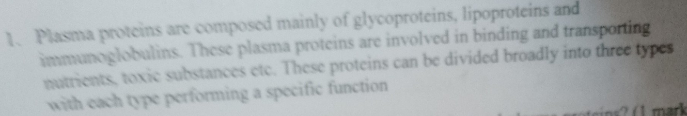
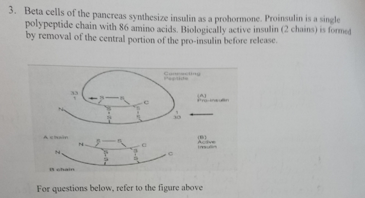

Short Essay Questions

2. A new drug is developed whuch selectively cleaves covalent bonds between two sulfur atoms of non-adjacent amino acids in a polypeptide chain.

4. The figure below is a plot showing the effect of substrate concentration on velocity of a reaction. Explain the portions indicated as: